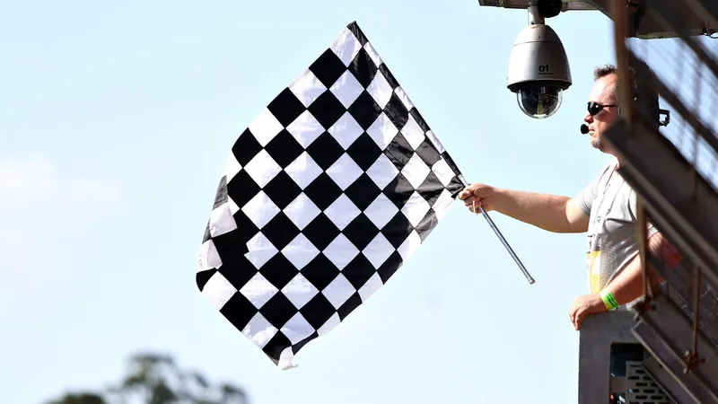
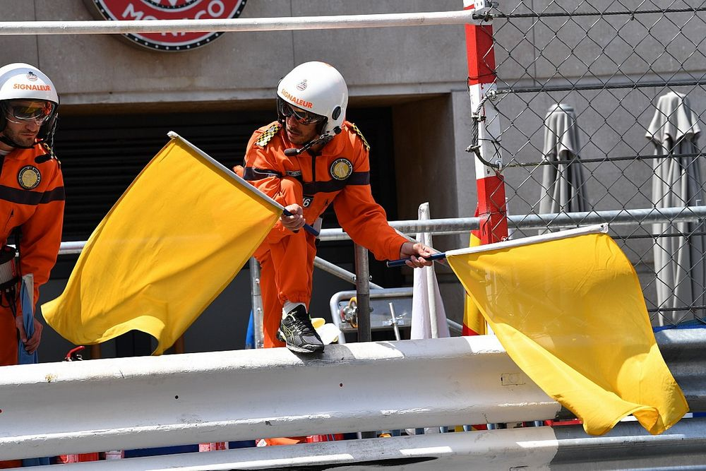
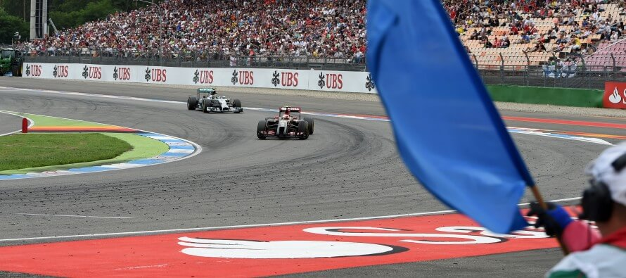
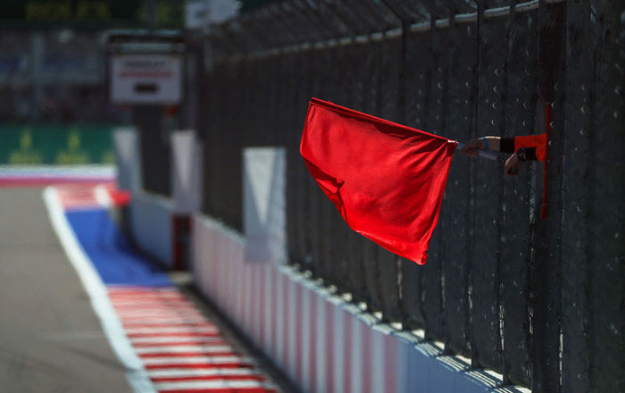
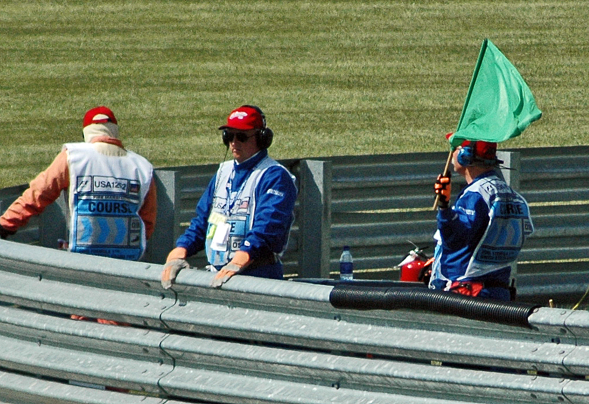
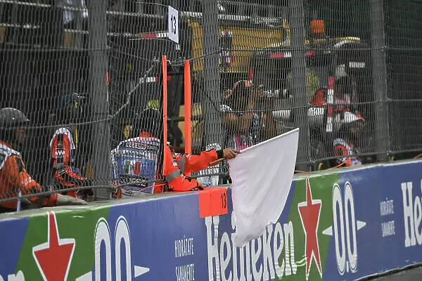
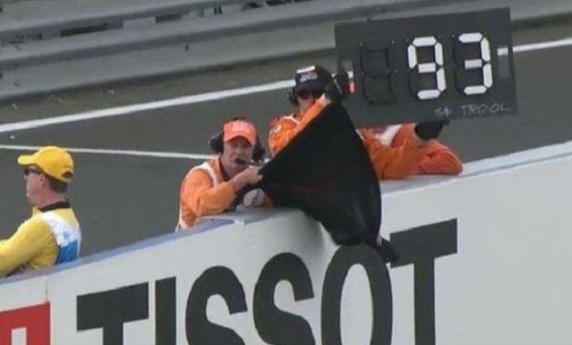
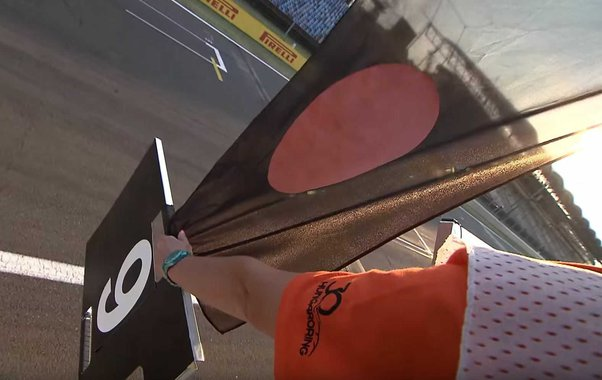
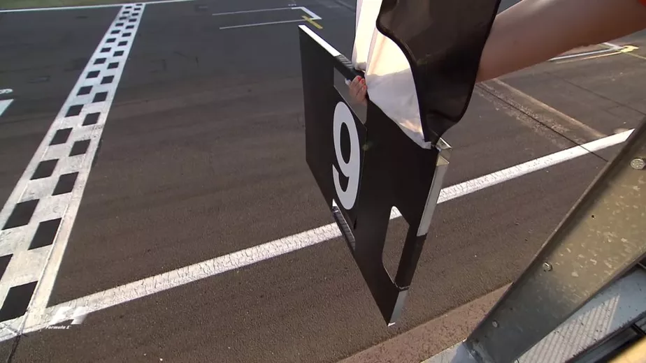
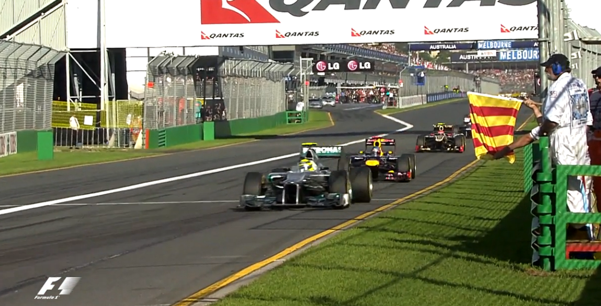

Bandeiras
|  |
Quadriculada |
|  |
Amarela |
|  |
Azul |
|  |
vermelha |
|  |
verde |
|  |
branca |
|  |
preta |
|  |
preta com círculo laranja |
|  |
preta e branca na diagonal |
|  |
vermelha e amarela |
pneus
- A aderência é algo fundamental para que um carro de Fórmula 1 tenha uma boa performance nas corridas. Ela é obtida através dos pneus que, quanto mais lisos, mais contato com o solo eles têm.
- Conhecido como "C1" Projetado para pistas de curvas rápidas ou temperaturas ambiente altas. Ele é o pneu mais duro da Fórmula 1 e leva mais tempo para aquecer. Dura mais e se degrada menos.
- Conhecido como "C2", é o pneu mais versátil e de ampla funcionalidade,que se adapta a diverentes circuitos.
-
>
- O "C3",apresenta bom equilibrio entre desempenho e durabilidade
- O "C5", é o pneu mais macio e oferece maior aderência à pista. Porém, assim como o C4, também dura menos.
- Indicado para pista molhada sem lençol dágua e também para uma superficie que está secando
- Uso exclusivo em pista molhada e em situações de chuvas fortes
Pontuação
- Os dez primeiros colocados em cada corrida marcam pontos,que são somados para o campeonato dos pilotos.
- O sistema de pontuação é o seguinte: 25-18-15-12-10-8-6-4-2-1.
- As 10 equipes contam com 2 pilotos cada, Sendo assim, no campeonato dos contrutores é usada a soma dos 2 pilotos para formar a pontuação da equipe.
Tipos de Seções
Treinos Livres (TL1 , TL2 ,TL3)
Com duração de uma hora, os treinos livres são realizados sempre às sextas(TL1 ,TL2) e aos sábados(TL3) na Fórmula 1 onde todos os vinte pilotos participam na pista. Os treinos não dão pontuação extra, assim como o resultado final não interfere em nada no fim de semana da corrida.
Qualificação
É dividido em três sessões: (Q1, Q2 e Q3). O "Q" vem de "Qualifying”, que traduzido para o português quer dizer “classificação”. Como a ordem numérica sugere, o grid de largada para a corrida é definido depois das três atividades.
Q1: todos os 20 pilotos têm 18 minutos para ir à pista e completar o circuito no menor tempo possível. Os 15 melhores da sessão avançam, enquanto o 16º, 17º, 18º, 19º e 20º já definem suas posições de largada.
Q2: Dura 15 minutos e descarta cinco nomes. Ou seja, os 10 melhores tempos seguem na disputa
Q3: Os 10 pilotos mais rápidos do dia têm 12 minutos para buscar o melhor tempo possível e cravar a pole position(largar na primeira posição no domingo de corrida)
Corrida Sprint
É uma corrida mais curta, ao sábado, e define o grid para a prova principal (domingo). Este formato garante pontos extras aos pilotos
Os treinos classificatórios não são descartados, mas acontecem na sexta-feira. Há ainda um segundo treino livre no sábado, realizado antes da largada da sprint.
Outros termos
Safety Car
- Carro de segurança que entra na pista quando há algum acidente

DRS(Sistema de redução de arrasto)
- É uma tecnologia automobilística cuja finalidade é reduzir o efeito do arrasto aerodinâmico e permitir ultrapassagens.
Boxes
- Local onde mecânicos e o restante da equipe trabalham nos carros
Drive-Through
- Penalidade que obriga o piloto a passar pelos boxes com velocidade reduzida.
Grid de Largada
- Local demarcado onde os carros se posicionam antes da largada.
Paddock
- Área onde membros das equipes e convidados circulam.
Pit-Stop
- Momento em que o carro entra nos boxes para trocar os pneus e reabastecer.
Guard-Rail
- Barreira de proteção que separa a área de escape e a parte exterior do circuito